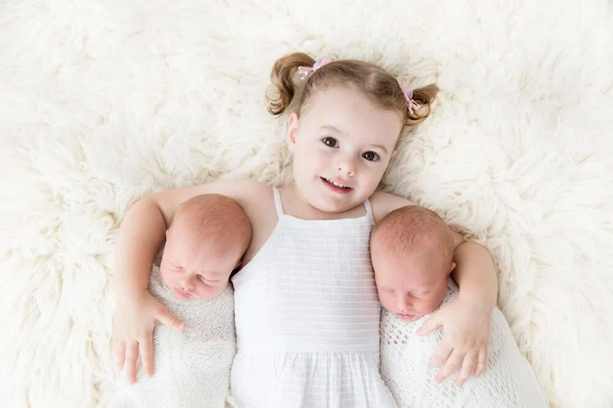
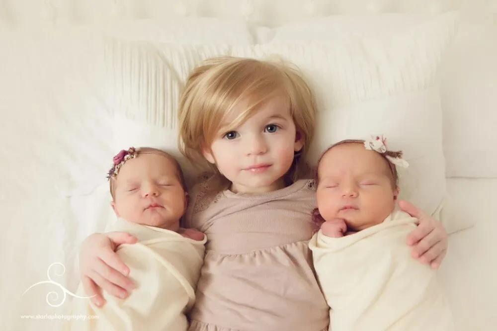
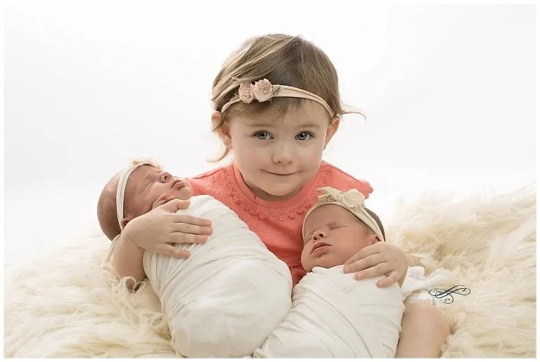

孖仔帮
公众号ID：twinsbang
关注
文|双胞胎平平安安妈妈
网图|侵删
【帮主】圆圈妈妈：遇到你们仨时，我闻到了花香，连天上的月亮都沉甸甸落了下来，化作你们来时所踏的光。
这是孖仔帮双胎专栏【孖妈来了】的第12篇文章，是一位二胎高龄来了双胞胎的妈妈的投稿，老大是姐姐，老二老三是弟弟。
没有跌宕起伏，扣人心弦的剧情，只有朴实感人的真人真事，愿每一位二胎来了双胞胎的妈妈被这个世界温柔以待。
【双胞胎平平安安妈妈】：生孩子真的是身、心、灵都遭受巨大的折磨与考验。仅仅是怀孕及产后的身体激素变化，放在男人身上，都可以让一个男人抓狂。
更别说剖腹产要把子宫切开七层，缝合七层，严重气血亏损；还有生不如死的胀气痛，不知是死是活的幻觉痛，酸爽麻辣的涨奶痛，以及孤独寂寞冷的心理痛……
产后抑郁高达60%到70%，产妇跳楼自杀，真的一点都不夸张！每一个自杀的产妇在生前都遭受了极其痛苦的身体和心理双重体验，她们自我解救不了自己，又没有别人及时的救赎她们，最终悲剧发生。
希望有更多的人能够去关心产妇的身心健康，不要让悲剧发生。每个女人也要好好爱自己！没有任何人能替代自己。
如果有个体贴入微的好老公，要庆幸。如果没有，更要自己爱自己！在痛苦无法自我承载时，要及时的寻求家人和专业人士的帮助！
但是从另一个角度看，任何考验对应的都是成长和蜕变，没有人的苦是白吃的，作为平常女子，我们都期望岁月静好，恬淡安稳，但当我们能够历经沧桑变化、面对波浪壮阔的人生，挥一挥手说一句也无风雨也无晴时，也未尝不是一种更高级的岁月静好！
生活总会在某一个十字路口，用金光闪闪的阳光回馈你曾经的付出和努力。对于我来说，坐月子就是这样痛苦又幸福的时光！
2020年7月9日下午15点31分、32分，我二胎剖腹产生下平平安安，一对可爱的双胞胎兄弟。高龄又是二胎，又是双胎，严重气血亏损，身体极度虚弱，和一胎生姐姐时那种生龙活虎真的没法比。
月子的第一周在医院度过，那几天真的是生不如死，最舒服的时光应该是医生给做剖腹产手术的那一个多小时，虽然带着忐忑不安的心情上了手术床，被麻醉师吆喝着把身体最大限度的拱下去，打麻醉在当时觉得也很酸爽，但和手术过后的痛苦比起来，真是小巫见大巫了。
麻醉过后，身体已无痛感，大脑很清醒，只听到肚皮被划开的咔嚓咔嚓的声音，没多大会，就听到婴儿明亮的哭声，简直是世界上最美妙的音乐，哥哥平平就这样出来了，5. 86斤，一分钟后，弟弟安安随之而来，6.18斤。
听到医生报的哥俩的体重，老母亲很欣慰，对得起我孕期不管体重如何增长也一定要猛吃猛喝，就是害怕双胎早产，宝宝体重不达标要住保温箱，既花钱孩子又受罪，这一担心总算尘埃落定，孕前100到生前170 的体重没有白长。
老母亲我沉浸在满满的欣喜和自豪感中，享受着医生给按肚子、掏胎盘、缝刀口，还听到给我缝合刀口的男医生在缝合完之后，自豪的向旁边的同事们炫耀他的技术，引来几个美女护士围观我的刀口。
当时的心情无比爽朗，就等着赶紧结束手术，好和病房外等待的家人团聚。整个手术过程可以说相当愉悦，手术结束观察完毕，我被推出手术室，在外面守候的老公、大宝、妈妈、弟弟、闺蜜一起回病房，一路上所遇之人无不投来羡慕之情，一个劲的夸平平安安长的好，我心里美滋滋的。
到病房安妥后，大家忙着给平平安安拍照，我也迫不及待的发个朋友圈晒图。此时已是下午五点多，可爱的医生来给我魔鬼般按肚子了，痛感八级，好在时间短，剧痛很快过去，而且现在医生更新了观念，只按一次，不像生老大那会每天都要按。
白天时间平稳度过，可怕的术后第一夜来临，这一夜我经历了至今心有余悸的胀气痛，因为没有通气，肚子里面的气向上涌，到达喉咙位置，在气管里憋着，想打嗝打不出来，憋的感觉像是上不来气。
我给老公说我呼吸困难，叫来医生看呼吸机，医生说指标一切正常，但是我就是觉得憋的难受，要死掉的感觉，揉揉肚子半天打出一个嗝，打出嗝的瞬间我觉得浑身舒畅，一种死而复生的感觉，但这种美妙持续了几秒钟，下面的气又上来了，我又被从天堂拉回地狱。就这样循环往复，我游走在天堂和地狱之间，被气和嗝折磨着。
我和老公开玩笑的说，以前只知道放屁舒服，不知道打嗝原来可以如此舒服，如果条件允许的话，我愿意用一千万换我打一个嗝。这是人生第一次体验胀气痛，难受度可以达到十级。
天快亮时医生给开了四磨汤，加速排气的。后来情况有所缓解，算是活过来了。可是新的痛苦来临，第二天我开始经历幻觉痛。
所谓幻觉痛，是我给它起的名字，就是只要我一闭上眼睛就会出现幻觉，眼前总是有特别多的画面出现，有熟悉的有陌生的，我好像被别人催眠进入了一个世界，我不想待在里面，挣扎着想出来，想回到现实，可是力量太虚弱，总是回不来，但又不想待在里面，所以两股意识就一直在打架在较量，我身在其中备受折磨，极度痛苦。
身体极度虚弱，需要沉入睡眠去休息，可是我的大脑告诉我不能闭上眼睛，一闭上眼睛就会被拉入幻觉的世界回不来，身体的虚弱又让眼睛会控制不住的闭上。
当时我妈和我老公轮流拉着我的手，让我放心去睡，他们看着我，不会有事。这样稍微让我放松点，有时能迷上几分钟，但幻觉还是会出现。
这样一直熬到夜里十点多，我脑袋里突然有一个想法，我觉得之所以这样会不会和阵痛泵有关，虽然白天医生和护士都说是因为我太虚弱的原因。
我提出这样的疑问后让老公去找值班医生，过一会一个男医生过来看我的情况，我把疑问告诉他，他说有的人对阵痛泵里面的麻醉剂极度敏感，可能会出现我这种情况，可以把阵痛泵关闭试试，不过立即不会有效果，因为已进入体内的麻醉剂代谢需要时间。
我说可以，我必须要关闭它。果然关闭之后，我慢慢好起来了。虽然没有阵痛泵，我要下床肚子会很痛，但比起幻觉痛，我只能两害相权取其轻了。第二天医生查房时得知我关闭了阵痛泵还下床排了大小便，连连给我点赞，夸我了不起。
第三天本以为会越来越轻松，苦日子要熬出头了，结果生理性涨奶如期而至。这种涨奶痛我在生老大时切身体会过，当时被我认为是生孩子第一痛苦，那种揪心的痛，碰一点而牵全身，真真的撕心裂肺。
但在我经历了胀气痛、幻觉痛之后，我觉得涨奶痛应该不算什么，我肯定能挺过去。可是我错了，我没想到涨奶痛竟然把我打倒了。
在无数次喂奶失败，孩子们嘴巴太小，根本含不住我的乳头，只能含住一个边洗，每吸一口都像在吸血，而且根本吸不出奶，连续多次无效吸允之后，我的乳头已经溃烂，涨奶也更加严重。
忍着疼痛找通乳师疏通了两次以后，我想放弃喂奶，直接想回奶。通乳师说你如果真的考虑好了，可以吃药，她说我的乳头确实太大，想喂奶成功只能一遍遍尝试，等孩子大点了，嘴巴会长大，吸允能力也会增强。
虽然医生护士一遍遍的鼓励我再坚持坚持，再尝试尝试。但当时的我只想一刀斩断痛苦的根源，心里已经承受不起一丁点的痛苦了。
就这样我坚决回奶了，涨奶痛虽然比不上胀气痛和幻觉痛，但却是压垮我的最后一根稻草。虽然有时看到可爱的宝宝，会油然升起让他们吃母乳的渴望，但我依然不后悔当时回奶的决定，因为在那时那刻，我急切需要一点甜来拯救自己，回奶可以让我在痛苦中得到短暂的解脱，这种解脱对当时的我至关重要。
吃上回奶药后，心情大好，身体也在慢慢恢复，下床活动一天比一天麻利。此时的我充满感恩，觉得世界很美好。
术后第六天，我们迫不及待出院到了月子中心。换了个环境，大家欢欢喜喜，终于和医院压抑的氛围说拜拜了。
在月子中心的日子，真的是轻松愉悦了很多，身体一天比一天好，宝宝们也有人照顾，我全身心的投入到恢复精气神中。
月子里最痛苦的就是气血亏损严重，又加上天气热，出虚汗出的比较厉害，一天都得换几身衣服，当时和一个比我早生两个月的双胞胎宝妈聊天，她说她产后快三个月，还在出虚汗，她都快抑郁了。当时我还开解她说出就出吧，总有停的一天。月子里除了出虚汗和时常会失眠、睡不着觉意外，其他一切静好。
空余时间在手机上听冥想课、听郦波讲古诗词，难得生活如此宁静恬淡。当时还写了听课感受，拿来和大家分享。
听冥想课感悟：
我们走的太远太快，以至于忘记了为什么出发！但是身体记得，潜意识记得，我们的一切行为，思想都会在潜意识中留下痕迹，同时外在显化于我们的身体中。
坚持每天花些时间去催眠去冥想，放下头脑中的杂念，去倾听灵魂的声音，去感受身体的知觉，做一些改变，提高自我的振动频率，就能吸引来同频共振的人物，思想，事情。
每个人来到世界，都独一无二，都值得最好的，有这样的信念，好的事物会自动来找你。也许在某个阶段，你的人生，事业，生活，身体会失衡，不要恐惧，要明白，失衡是前进的机会！
就比如走路，迈开一只脚时你处于失衡状态，另一个脚跟上后重新达到平衡，就这样一步一失衡一步一平衡中，你一直在前进。
所以失衡不可怕，失衡意味着调整和机遇，重新平衡后前进就发生了。目前我的身体正处于失衡状态，调整不好就是抑郁就是困苦，调整好了就是进步就是更好的自我！把握机会，期待完美蜕变，遇见更好的自己！
听郦波老师讲古诗词感悟：
诗人的一生大多波折坎坷，历经荣辱沧桑磨难，跌宕起伏，最后都归于平静，淡泊，最终与自我和解，与世界和解。
所有的一切都历经过以后，发现自我和解才能得到救赎，才能得到灵魂的净化和宁静。行至水穷处，坐看云起时。
归去，也无风雨也无晴。比起他们的一生，我们的生活简直太顺畅了，眼前的这点烦恼又算得了什么！祝福我们每个普通人也能笑看花开花落，斜风细雨不须归。
在月子中心完美的度过了28天后，全家开心的回到了温暖的家。老公还特地买了鲜花欢迎我们回来。回想这一个月的经历，真的是波荡起伏，好在总算走过来了。
生活赐予的磨难，当你跨不过去时可能就会一直活在痛苦困顿中，当你跨过去时，它就成为美丽的经历，回过头去看，它在闪闪发光的对你微笑着，已经化身为前行路上温暖的阳光照耀着更美丽的你！
写在最后，想对自己的家人说一些心里话：
致母亲：
从怀孕到生到坐月子，你让我体会到了什么是无微不至，什么叫世界上一切人都不如亲妈！你的全心付出，我很感谢！你的操劳辛苦，我很愧疚！
世界上每一个女人都不容易，每一个母亲都很伟大，惟愿世界上的母亲们不要太辛苦的为别人付出，要好好爱自己！来日并不方长，珍惜和妈妈在一起的时光！
致老公：
换着口味做菜，全程陪伴产检，焦急等待生产，尽心照顾月子。虽然这其中有诸多让我不满意之处，不如我妈那样细致入微，也不如别人家老公那样甜蜜浪漫，但依然要感谢不完美的你对我的照顾。
好的关系彼此滋养，在滋养中愈加光彩夺目。惟愿余生，放下执着，放下对错，在世俗中彼此陪伴与滋养，把最暖的光留给对方，不求轰轰烈烈，但愿一世温暖！
致龙龙：
你是一个善良简单快乐纯真的孩子，感情丰富细腻，带给我们很多快乐，治愈着世俗世界的我们。对你的爱永远都是独一无二的，不会因为弟弟们的到来而有一丝改变。妈妈也祝愿你永远拥有这种美好！
致平平安安：
你们是上天赐给我们的礼物，以前从没觉得自己运气有多么的好，自从有了你们，我才知道自己有多幸运，特别感恩！愿你们在我们这个平凡普通的家庭快乐平安长大！
-END-
作者/双胞胎平平安安妈妈@慧娟
排版/圆圈妈妈
写手招募
如果你是爱分享的双胞胎爸爸或妈妈
欢迎投稿至孖仔帮【双胎专栏】
分享出你和双胞胎的成长故事
添加小助手微信sgguy-com
备注“投稿”
今日互动话题
#二胎来了双胞胎，你是怎么熬过来的？#
评论区聊一聊呗！
微信公众号：孖仔帮
ID : twinsbang
专注双胞胎孕育，养育，教育经验分享
扫码关注我们
点一下你会更好看耶


